2 Chapter 2: Getting Started
2.1 Summary
2.2 Using the prompt window
Your first conversation
The first time you use Klausmate, and with each subsequent restart of R, a message appears in the Your Prompt window to remind you of the importance of data protection and to not disclose personal information. Read this and press Clear to get started.
Klausmate aims to protect your and other people’s data. It sends Claude your prompts, code and the names of variables but not the data values themselves. It removes printed rows of data from any results it shares. Anthropic, the company that runs Claude, does not use these interactions to train its models and deletes them after up to 30 days. However, these safeguards cannot recognise every kind of personal information and anything you type is sent as written. You should therefore never include personal information in a prompt or use Klausmate with data that could identify individuals.
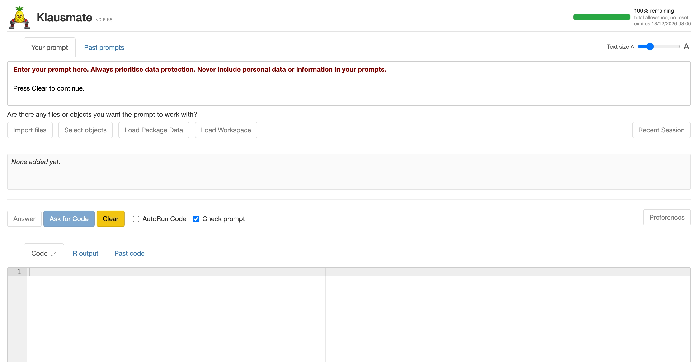
Entering a prompt
Try entering the following prompt into the Your Prompt window:
Map these datathen press Ask for Code.
It will likely generate a message asking for clarification.
The problem is not the instruction that clearly asks for a map. The problem is not knowing which data to map.
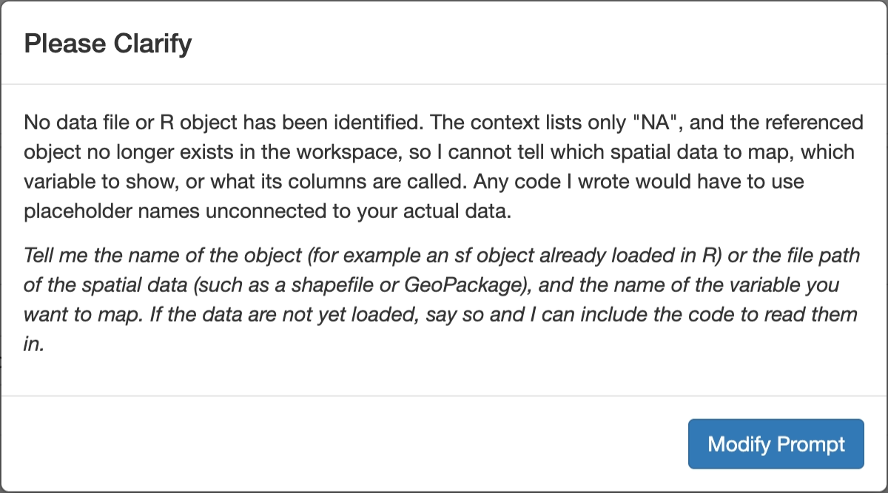
Adding context to the prompt
Clarification could be obtained by modifying the prompt. However, a different approach is needed here. We will ‘attach’ a data set to the prompt to provide additional context for it.
The data we shall map are linked to the Klausmate package so press Load Package Data, wait a moment of two, then select (tick) and Add the first of the two Birmingham data sets (birmingham_lsoa_2001_2011). Then Close the window.
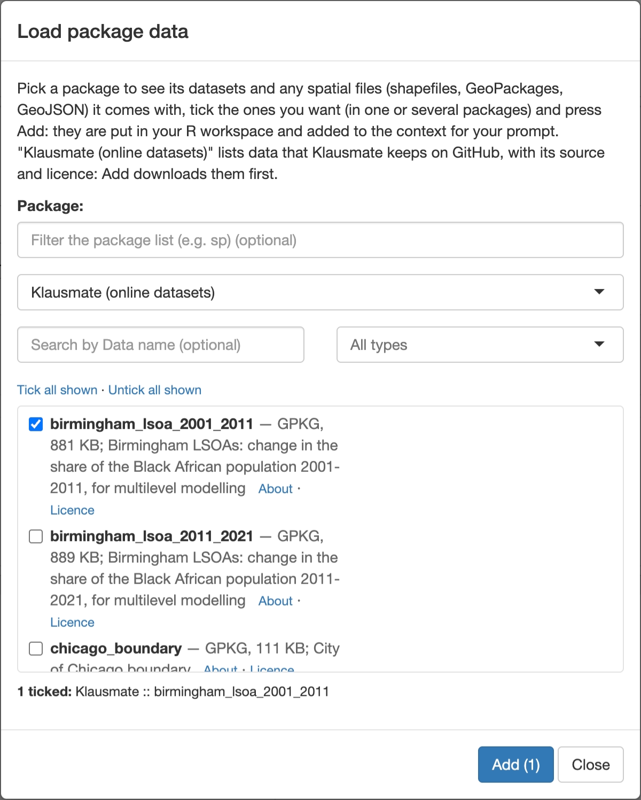
You will now see birmingham_lsoa_2001_2011 listed below the prompt window. Double click on the binoculars icon to the left of the filename and its tick box to Look at the data. A description of each of the variables in the data can be found under the Variable description tab.
Click back into the Your prompt window and edit the prompt to say
MapNext, go back to the variable descriptions and scroll down to find ba_share_2011 under Percentages and shares of the Black African population. Double clicking on that variable name or dragging it to Your prompt will add it to the prompt.
The prompt should now say
Map ba_share_2011Close the Look at window.
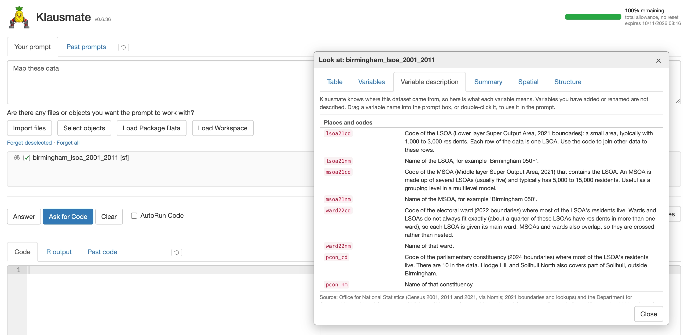
2.3 Generating a code block
Ask for Code
We can now generate the code block needed to map the variable. Ensure that Your prompt still says
Map ba_share_2011and that AutoRun code is not selected (the box should not be ticked) but Check prompt is—these are the defaults.
Then press Ask for Code.
After a brief pause, code will appear in the Code window.
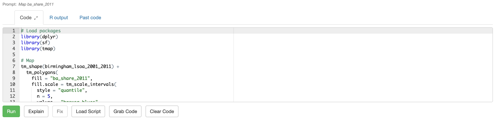
The code has been generated by AI—specifically by Claude Sonnet 5.5. It is typically reliable for tasks such as this but it is important to know that
the code you obtain may be different from above and from other students; and
the code could contain errors, especially for more complex tasks.
Expanding the code window
Press the expansion icon (the small, diagonally pointing arrows) to the right of where it says Code in the Code tab. This will expand the code window.
Take time to read through the code. Can you understand, in general terms, what it is doing?
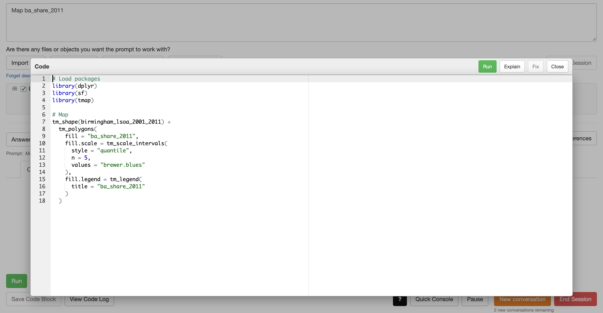
2.4 Explaining the Code
You may not fully understand the code that has been generated. Press Explain for a description of what it does.
Next, try changing the level of explanation and Regenerate the explanation.
Then press Close. Also Close the expanded Code window,
You can select a part of the Code block to be explained or ask to Tell me more about any explanation that has been generated.
Explanations are saved in the Explanation tab, next to the Code window (to see it, you will first need to Close the expanded code window if it is open).
Remember, calls to the AI—both the generation of Code and the request for an Explanation—are not cost free but will eat into your cost allowance.
The amount remaining of your allowance can be viewed to the top right of the Klausmate main window. If no restriction has been imposed then it will record the daily cost instead.
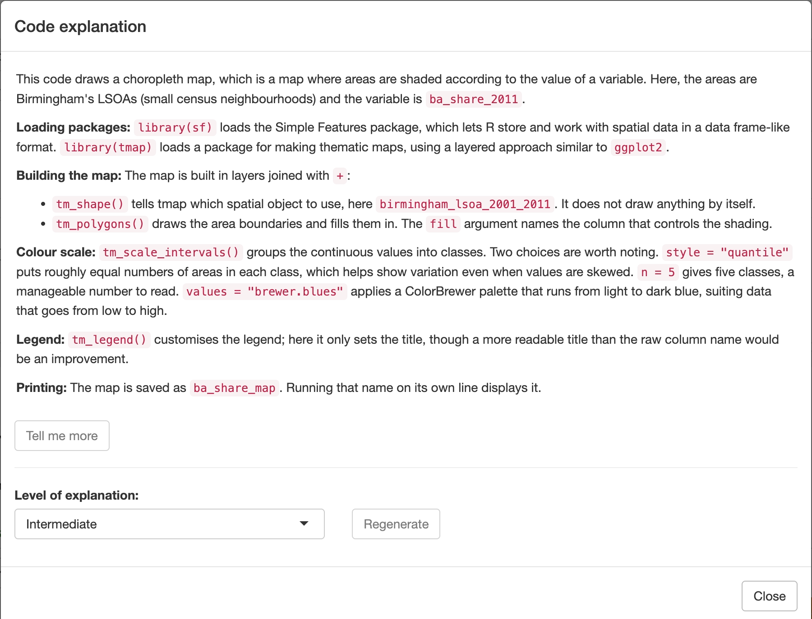
2.5 Running and modifying code
Run the code
Make sure the Code tab is in focus with the generated code shown in it.
To run the code, press the Run button and wait. The word Success! will appear if the code runs to completion. The tab will change to any output—here it is a map.
Click on the thumbnail to enlarge it.
Ignore where it says Save this plot to a file (do not tick it).
Close the plot window.
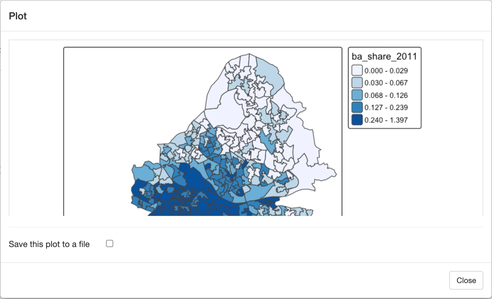
Modifying the code
Imagine you want to change the map to a red colour palette but do not know how. Go back to Your prompt and type,
Change the map to a red colour paletteNow Ask for Code. The Changes tab will appear, highlighting the revisions to the code.
What is the key parameter that has been changed and why?
You can now Run the revised code.
Only limited changes are highlighted. If the code has been changed substantially, the Changes tab will not appear.
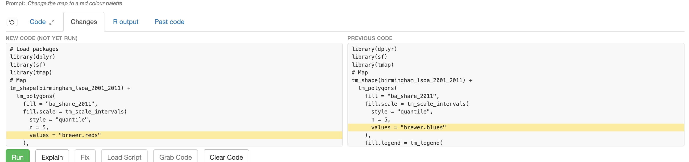
Correcting errors
Go back to the Code window and look for a line that says something like style = "quantile".1 Now, within the Code window, manually change it to
style = "jenns"Make sure you type it as written here. Do not use a prompt; just change it yourself.
The code block should now be similar to—but not necessarily identical to—the below. If not, you could Clear Code in the code window and copy and paste the following into it.
# Map
ba_share_map <- tm_shape(birmingham_lsoa_2001_2011) +
tm_polygons(
fill = "ba_share_2011",
fill.scale = tm_scale_intervals(
n = 5,
style = "jenns",
values = "reds"
),
fill.legend = tm_legend(title = "ba_share_2011")
)
ba_share_mapNow press Run.
You will find that the code has Failed to run. That is because we introduced an error (deliberately; typically it would be by accident).
The R output helps explain the problem, but you could leave the R output window in focus and press Explain for further clarification.
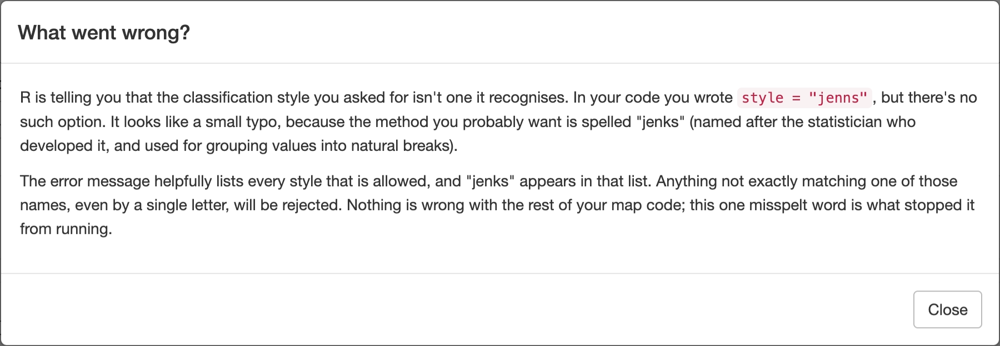
The correction needed to make to the code should be clear but, if not, Klaus can try and fix it automatically.
Press the Fix button to proceed.
If the amended code now runs successfully, the Changes are likely to be highlighted.
Any output—in this case, a revised map using Jenks ‘natural breaks’ classes—will appear in R output.
The Fix is AI generated so may not be successful. Either way, it will also eat into your cost allowance.
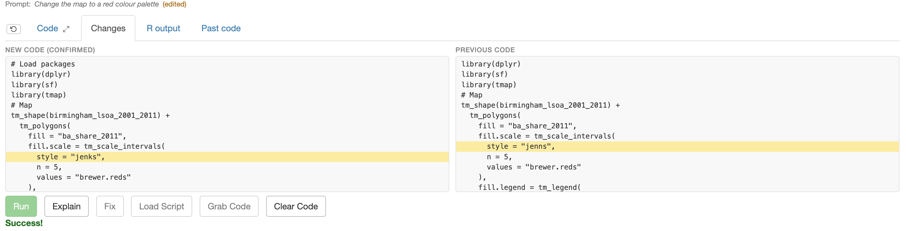
Recalling earlier code and output
Click on the Past code tab.
Try pressing the small Code and Output buttons to recall past activity.
When you are ready, make sure the code that generated a Map of ba_share_2011 with are red palette is in the Code window, then Close the Past code.
The most recently generated or recalled Code or Output is always moved to the top of the Past code window and highlighted in yellow.
Try it yourself
Add a North arrow to the top left of the map and a scale bar to the bottom right.
In much the same way as you can recall earlier code using the Past code tab, previous prompts and their code and outputs can be selected from the Past prompts tab.
2.6 Interfacing with RStudio
Viewing and editing the code block in RStudio
Make sure the Code tab is selected (in focus).
Press Save Code Block to pass the contents of the Code window to RStudio where it can be edited further. It will appear in RStudio with the name shown on screen. For example, ‘Code block saved to Add_north_arrow_and_scale_bar_to_map.R’.
Dragging a block code to RStudio
In RStudio, use File –> New File –> R Script to create a blank script file.
Go back to Klausmate and move the host browser so you can also see some of the blank script you just created in RStudio.
Click on the Code tab if it is not already in focus.
Hover your mouse over the word Code and use you mouse to drag the Code tab from Klausmate to the blank script. This will have the effect of cutting and pasting the code block from Klausmate to RStudio.
Grabbing code from RStudio into Klausmate
Reciprocally, you can grab code from RStudio and bring it into Klausmate.
Make sure the script (e.g. Add_north_arrow_and_scale_bar_to_map.R) is the tab which has focus (is selected) in RStudio.
Now go back to Klausmate and Press Clear Code to delete the contents of the Code window.
Next press Grab Code.
If what is in focus within RStudio is a code script then it will be loaded into the Code window.
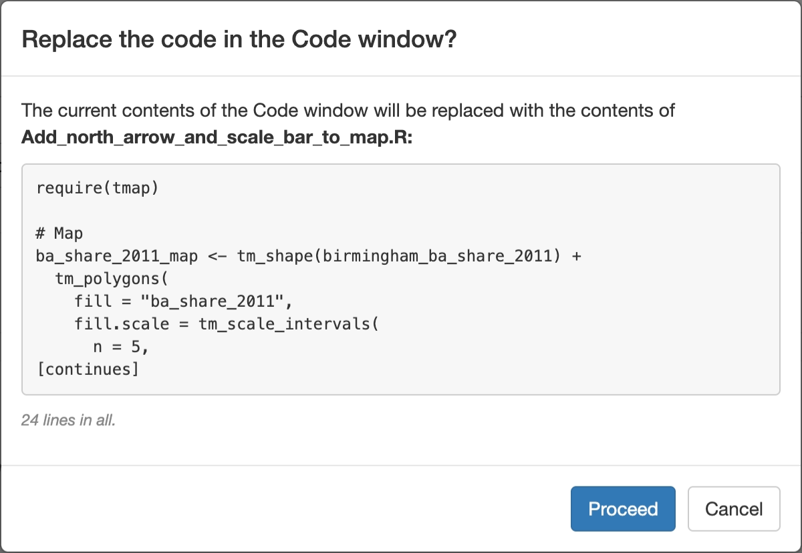
2.7 Viewing and saving your code log
Press View Code Log to bring up a log of all the code that has been generated in the current conversation. Press Save to pass the log—date and time stamped—to RStudio.
The Code Log is saved and opened in RStudio by default when you pause or end your session in Klausmate.
2.8 Pausing or ending the session
Klausmate is not designed to replace RStudio. It is intended to help write and debug short blocks of code that can be passed into RStudio for further development. This means most of your programming should continue to be done in the main RStudio environment.
Returning to the Console in RStudio
Go back to RStudio and view its Console window. It will show
> klaus()
Klausmate is runningPresently, the Console is ‘locked’ by Klausmate, which means there is no > prompt showing. Consequently, if you type 1 + 1 in the RStudio Console window it will not return the answer 2.
The simplest way to ‘release’ the Console is to press esc.
To re-activate Klausmate, type klaus() in the RStudio Console and go back to your browser window.
There is a Quick Console in Klausmate that can be used for quick operations. It is better avoided—Pause Klausmate and use the RStudio Console instead.
Pausing or ending the session from within Klausmate
Using the Pause button within Klausmate also ‘releases’ the Console in RStudio. Its advantage over pressing `esc` is it is more robust, offering to save your Code Log file and open it in RStudio. That gives you a copy of your coding to that point. Pressing esc does not offer this.
To quit Klausmate completely, press End Session.
Only Pause Klausmate if you plan to return to your current session. Otherwise, use End Session for a ‘cleaner’ exit that will also default to saving your Code Log and workspace in your working directory.
Restoring previous sessions
Klausmate has some capacity to recover a Recent Session.
Do not be reliant on recovering a Recent Session. Up to 5 sessions are kept, each for 7 days, then deleted.
2.9 Help
Klausmate has a Help Mode. To enter it, press the ? button towards the bottom of the screen. In Help Mode you can press on any button and find out more about what it does. Press ? again to exit.
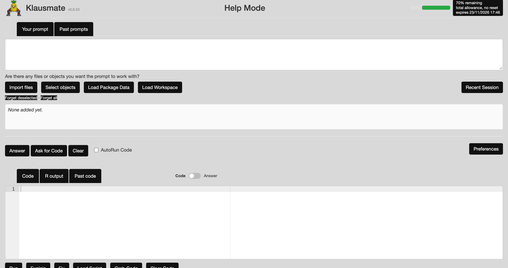
It is possible that it, or something similar, does not appear in the code. If that is the case, go back to Your prompt and Ask for Code with the following instruction: ‘Draw the map using tmap and with quantiles for the map classes’.↩︎